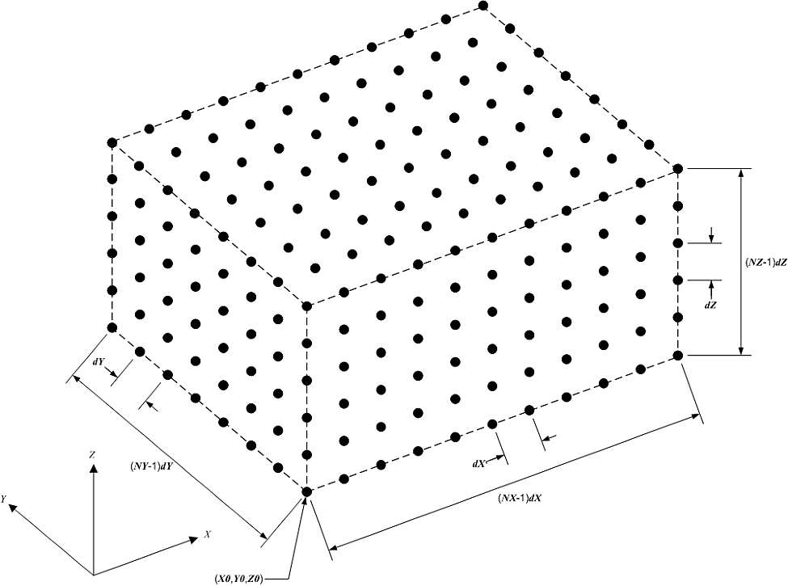
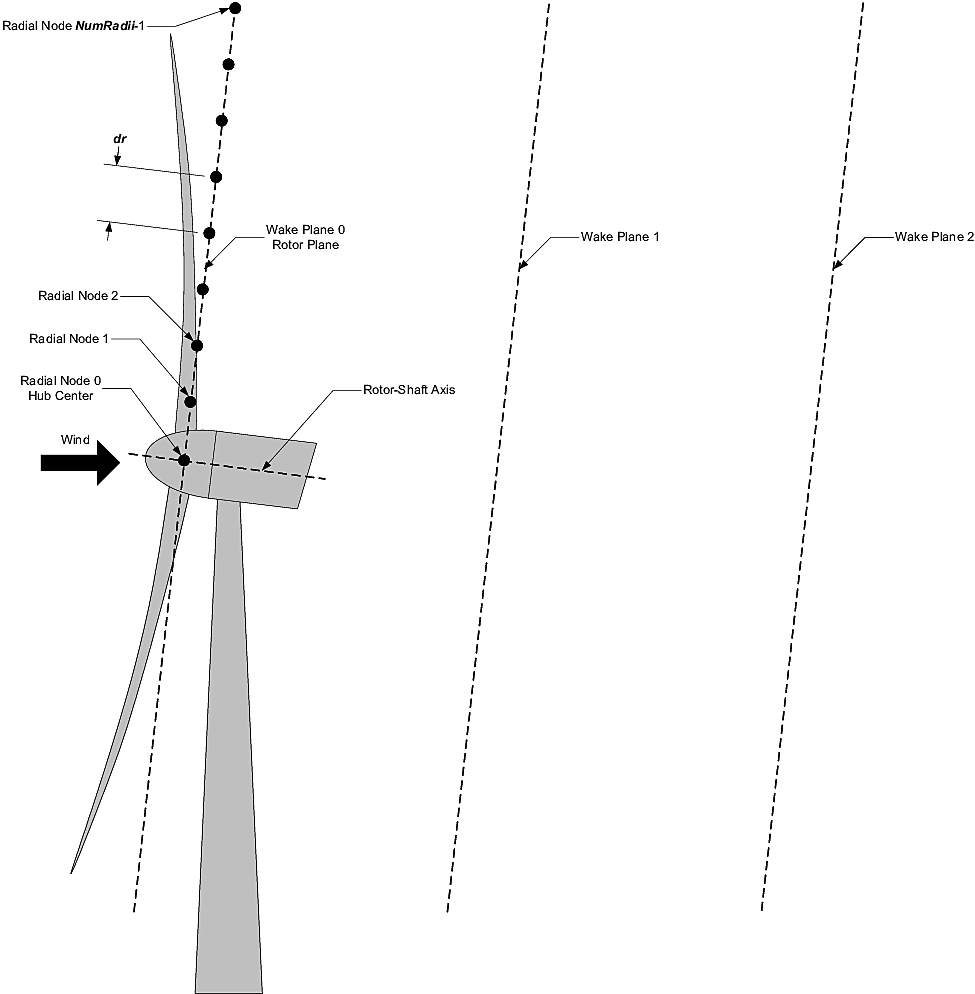

4.19.4. 입력 파일
기본 FAST.Farm 입력 파일은 주변 바람, 풍력 발전 단지 내의 풍력터빈 레이아웃, 후류 축대칭 유한차분 그리드, 후류 역학에 대한 보정된 매개변수, 시각화 출력, 출력 파일 사양 및 보조 매개변수를 정의합니다. 충실도가 높은 전구체 대기 시뮬레이션에서 선택적으로 생성된 주변 바람 데이터는 기본 FAST.Farm 입력 파일에서 참조되는 별도의 파일에 저장됩니다. 풍력 발전소의 각 풍력터빈에 대한 속성은 기본 FAST.Farm 입력 파일의 기본 OpenFAST 입력 파일(각 풍력터빈당 하나)에서 참조되는 표준 OpenFAST 입력 파일에 저장됩니다.
행 수가 지정된 테이블을 제외하고 입력 파일에서 행을 추가하거나 제거해서는 안됩니다.
4.19.4.1. 장치
FAST.Farm은 SI 시스템(kg, m, s, N)을 사용합니다.
4.19.4.2. FAST.Farm 기본 입력 파일
FAST.Farm 기본 입력 파일은 여러 기능 섹션으로 구성됩니다.
시뮬레이션 제어
공유 계류
주변 바람
풍력터빈
웨이크 다이내믹스
시각화
출력.
각 섹션은 FAST.Farm 모델의 측면에 해당합니다. 아래 하위 섹션을 참조하세요. 샘플 FAST.Farm 기본 입력 파일은 다음과 같습니다. 섹션 4.19.10. FAST.Farm 이론에 설명된 입력 매개변수와 변수 사이에 일대일 동등성이 있는 경우 섹션 4.19.7, 변수 섹션 4.19.7 는 아래 하위 섹션의 입력 매개변수 뒤 괄호 안에 표시됩니다.
입력 파일은 사용자가 사용하기 위한 두 줄의 헤더 정보로 시작하지만 소프트웨어에서는 사용되지 않습니다.
4.19.4.2.1. 시뮬레이션 제어
에코 [flag]는 FAST.Farm이 FAST.Farm 기본 입력 파일의 내용을 에코하도록 할지 여부를 지정합니다(입력 파일의 오류를 디버깅하는 데 유용함). 만약에 에코 = TRUE, 에코 파일이 생성됩니다. 에코 파일의 명명 규칙은 <RootName>.ech, 여기서 <RootName>는 파일 확장자를 제외한 FAST.Farm 기본 입력 파일의 이름입니다.
AbortLevel [인용 문자열]. 옵션은 "경고", "심각함" 또는 "치명적"입니다. FAST.Farm의 AbortLevel 는 독립형 OpenFAST에서 설정된 레벨과 동일한 방식으로 사용되지만 FAST.Farm에 설정된 AbortLevel 는 풍력 발전 단지에 있는 각 풍력터빈의 OpenFAST 기본 입력 파일에 설정된 수준을 재정의합니다. 치명적인 오류가 발생하면 중단되도록 FAST.Farm을 설정하는 것이 일반적이지만 추가 지침은 FAST v8 ReadMe 문서를 참조하세요.
티맥스 [초]는 실행할 시뮬레이션의 전체 길이입니다. 첫 번째 출력은 다음과 같이 계산됩니다. \(t=0\); 마지막 출력은 다음에서 계산됩니다. FAST.Farm에 설정된 \(t\) = 티맥스. 는 티맥스 는 풍력 발전 단지에 있는 각 풍력터빈의 OpenFAST 기본 입력 파일에 설정된 시뮬레이션 길이를 재정의합니다.
Mod_AmbWind [스위치]는 주변 바람 소스를 나타냅니다. 네 가지 옵션이 있습니다. 1) VTK 형식의 충실도가 높은 전구체 시뮬레이션으로 생성된 주변 풍속 데이터 사용 [Mod_AmbWind=1], 2) FAST.Farm 인터페이스에 의해 정의된 주변 바람 데이터를 사용하여 InflowWind
모듈, 인스턴스 1개 포함 InflowWind [Mod_AmbWind=2], 3) FAST.Farm 인터페이스에 의해 정의된 주변 바람 데이터를 사용하여
여러 인스턴스가 있는
InflowWind 모듈 InflowWind
[Mod_AmbWind=3]또는 4) AMReX 플롯 파일 형식으로 저장된 고충실도 전구체 시뮬레이션으로 생성된 주변 풍속 데이터 사용
[Mod_AmbWind=4]. 아래의 별도 주변 바람 하위 섹션은 각 옵션과 관련됩니다. 참고하세요 Mod_AmbWind = 4에서는 FAST.Farm을 AMReX 지원으로 컴파일해야 합니다(
CMake의-DAMREX_READER=ON , Visual Studio로 컴파일할 때는 사용할 수 없음).
Mod_WaveField [스위치]는 파동장이 어떻게 처리되어야 하는지를 나타냅니다. 두 가지 옵션은 다음과 같습니다. 1) 조정 없이 각 터빈에서 개별 HydroDyn 입력을 사용합니다. 2) 풍력 발전 단지에서 발생한 터빈 오프셋을 기반으로 파동 위상을 조정합니다.
Mod_SharedMooring [스위치]는 농장 수준의 계류 라인 시스템이 터빈을 상호 연결하는지 여부를 나타냅니다. 현재 두 가지 옵션이 있습니다: 0) 공유 계류 없음, 3) MoorDyn.
4.19.4.2.3. 주변 바람: 시각화 툴킷 형식의 전구체
이 섹션의 입력 매개변수는 다음 경우에만 사용됩니다. Mod_AmbWind = 1, 고충실도 전구체 시뮬레이션에 의해 생성된 주변 바람의 사용을 나타냅니다. 이 경우 공간 이산화를 포함한 주변 바람은 에 설명된 대로 VTK 형식으로 저장되어야 합니다. 섹션 4.19.4.3 – FAST.Farm에서 수정하지 않고 직접 사용됩니다.
DT_Low-VTK [초] (\(t\))는 FAST.Farm의 전역(드라이버/글루 코드) 시간 단계뿐만 아니라 저해상도 주변 바람 데이터 파일 및 계산의 시간 단계를 설정합니다. DT_Low-VTK 는 다음과 같습니다. 이 문서의 DT_Low . FAST.Farm의 모듈은 매 호출됩니다. DT_Low 초(OpenFAST 및 해당 모듈은 다음보다 작거나 같은 정수 배수인 시간 간격을 사용할 수 있음) DT_Low.
DT_High-VTK [초]는 고해상도 주변 바람 데이터 파일 및 계산의 시간 간격을 설정하고 는 DT_Low보다 작거나 같은 정수 배수여야 합니다.. DT_High-VTK 는 다음과 같습니다. 이 문서의 DT_High . 그것은 필수적이다 DT_Low 및 DT_High 는 솔루션 정확도를 보장하고 충실도가 높은 전구체 시뮬레이션에서 주변 바람 데이터를 생성할 때 사용되는 시간 분해능과 일치할 만큼 충분히 작습니다. DT_Low 는 후류 역학의 시간 척도와 일치해야 합니다(예: 초 단위로, 더 높은 평균 풍속의 경우 더 작아야 함). DT_High 는 예를 들어 1초 단위로 정확한 공기 역학적 하중 계산에 충분합니다. 적절한 시간 단계 선택에 대한 추가 지침은 다음에서 제공됩니다. 섹션 4.19.6.
WindFilePath [인용 문자열]은 저해상도 및 고해상도 주변 바람 데이터 파일이 저장되는 디렉터리의 경로를 지정합니다. 경로는 FAST.Farm 기본 입력 파일의 위치를 기준으로 지정하거나 절대 경로를 사용하여 지정할 수 있습니다. 경로 주위에 따옴표를 사용하는 것이 좋습니다. 파일이나 경로 이름에 공백이 있으면 이러한 따옴표가 필요합니다. FAST.Farm에서는 주변 바람 데이터 파일이 WindFilePath로 지정된 디렉터리의 특정 하위 디렉터리에 특정 파일 이름으로 저장되어야 합니다. 저해상도 주변 바람 데이터 파일의 이름을 지정해야 합니다. 주변.t<n낮음>.vtk 라는 이름의 하위 디렉터리에 저장됩니다. 낮음. 파일 이름에는 <n낮음> 는 다음 사이의 정수(앞에 0이 없음)입니다. 0 (에 \(t=0\)) 및 N-1, 여기서 \(N=FLOOR\left( \frac{\textbf{TMax}}{\textbf{DT_Low}} \right)+1\) 는 저해상도 시간 단계의 수입니다. 고해상도 주변 바람 데이터 파일의 이름을 지정해야 합니다. 주변.t<n높음>.vtk, 여기서 <n높음> 는 0 사이의 정수(앞에 0이 없음)입니다. \(t=0\)) 및 \(\frac{\textbf{DT_Low}}{\textbf{DT_High}}\left( N-1 \right)\). 파일은 다음 이름의 하위 디렉터리에 저장되어야 합니다. 높음T<nt>, 여기서 <nt> 는 1과 총 풍력터빈 수(NumTurbines). 하위 디렉토리 높음T<nt> 에는 풍력터빈에 해당하는 고해상도 주변 바람 데이터가 포함되어야 합니다. FAST.Farm 기본 입력 파일의 풍력터빈 섹션에 지정된 <nt>– 참조 섹션 4.19.4.2.6. 각 주변 바람 데이터 파일의 VTK 형식(저해상도 및 고해상도 도메인 모두)은 다음에서 설명한 대로 동일합니다. 섹션 4.19.4.3.
ChkWndFiles [플래그]는 FAST.Farm이 시뮬레이션을 실행하기 전에 주변 바람 데이터 파일의 일관성을 확인해야 하는지 여부를 지정합니다(나중에 충돌 가능성 방지). 이 점검은 시간 집약적이므로 다음을 수행하는 것이 좋습니다. 이전 시뮬레이션에서와 같이 주변 바람 데이터가 이전에 확인된 경우 ChkWndFiles 를 FALSE(확인 비활성화)로 설정합니다. TRUE로 설정하면 FAST.Farm은 다음을 확인합니다.
저해상도 주변 바람 데이터 파일의 수는 전체 시뮬레이션을 실행하는 데 충분합니다(최대 \(t =\)티맥스). 하위 디렉터리에 더 많은 파일이 있으면 첫 번째 파일만 N 가 사용됩니다.
고해상도 주변 바람 데이터 파일의 수는 전체 시뮬레이션을 실행하는 데 충분합니다(최대 \(t =\)티맥스) 모든 풍력터빈용. 하위 디렉터리가 더 많은 경우 첫 번째 디렉터리만 NumTurbines 가 사용됩니다. 각 하위 디렉터리에 더 많은 파일이 있는 경우 첫 번째 파일만 \(\frac{\textbf{DT_Low}}{\textbf{DT_High}}\left( N-1 \right)+1\) 가 사용됩니다.
각 저해상도 주변 바람 데이터 파일의 공간 해상도(그리드 포인트 수, 원점 및 간격)는 동일합니다.
각 고해상도 주변 바람 데이터 파일의 공간 해상도(그리드 포인트 수, 원점 및 간격)는 지정된 풍력터빈에 대해 동일합니다.
각 고해상도 도메인의 그리드 포인트 수는 풍력 발전소의 모든 풍력터빈에 대해 동일합니다.
4.19.4.2.4. 주변 바람: InflowWind 모듈
이 섹션의 입력 매개변수는 다음 경우에만 사용됩니다. Mod_AmbWind = 2 또는 3, 하나 이상의 인스턴스를 통해 주변 바람의 사용을 나타냅니다. InflowWInd 모듈. 이 경우, 다음에 명시된 주변 바람은 다음과 같습니다. InflowWInd 는 FAST.Farm 내에서 사용하기 위해 저해상도 및 고해상도 도메인으로 보간됩니다.
DT_Low [초] (\(\Delta t\))는 저해상도 주변 바람 계산의 시간 간격과 FAST.Farm의 전역(드라이버/접착 코드) 시간 간격을 설정합니다. FAST.Farm의 모듈은 매 호출됩니다. DT_Low 초(OpenFAST 및 해당 모듈은 다음보다 작거나 같은 정수 배수인 시간 간격을 사용하도록 선택할 수 있음) DT_Low. 언제 Wake_Mod=2,3알고리즘의 안정성은 다음의 선택에 따라 달라집니다. 박사 및 DT_Low. (일반적으로 \(\textbf{DT_Low}<\textbf{dr}/(2V_\text{Hub})\), 참조 섹션 4.19.6)
DT_High [초]는 고해상도 주변 바람 데이터 계산의 시간 단계를 설정하며 다음보다 작거나 같은 정수 배수여야 합니다. DT_Low. 그것은 필수적이다 DT_Low 및 DT_High 는 솔루션 정확도를 보장할 만큼 작습니다. DT_Low 는 후류 역학의 시간 척도와 일치해야 합니다(예: 초 단위로, 더 높은 평균 풍속의 경우 더 작아야 함). DT_High 는 예를 들어 1초 단위로 정확한 공기 역학적 하중 계산에 충분합니다. 적절한 시간 단계 선택에 대한 추가 지침은 다음에서 제공됩니다. 섹션 4.19.6.
다음 9개의 입력 매개변수는 저해상도 주변 바람 영역의 공간 이산화를 설정합니다. 저해상도 도메인은 전 세계에서 바람 데이터 포인트(3D 셀의 모서리를 나타냄)의 구조화된 3D 그리드로 저장됩니다. X-Y-Z 관성 프레임 좌표계(일반적으로 그림 참조) 그림 4.62.


그림 4.62 저해상도 또는 고해상도 도메인을 위한 구조화된 3D 그리드입니다.
NX_Low, NY_Low및 이 플래그 값 아래에 NZ_Low [정수] 각 방향의 바람 데이터 포인트 수를 설정합니다.
X0_Low, Y0_Low및 이 플래그 값 아래에 Z0_Low [m] 그리드의 원점을 설정합니다(최저-최저). X-Y-Z 좌표).
dX_Low, dY_Low및 이 플래그 값 아래에 dZ_Low [m]은 각 방향의 공간 이산화를 설정합니다.
총 저해상도 도메인 크기의 크기는 (NX_Low-1)dX_Low \(\times\) (NY_Low-1)dY_Low \(\times\) (NZ_Low-1)dZ_Low. 저해상도 영역은 터빈과 후류가 잠재적으로 존재할 수 있는 풍력 발전소 전체에 걸쳐 공간 평균화가 정확하도록 충분한 해상도로 확장되어야 합니다(예: 유틸리티 규모 풍력터빈의 경우 수십 미터 정도). 적절한 공간 이산화 선택에 대한 추가 지침은 다음에서 제공됩니다. 섹션 4.19.6.
저해상도 도메인과 마찬가지로 각 고해상도 도메인은 전 세계 풍력 데이터 포인트의 구조화된 3D 그리드로 저장됩니다. X-Y-Z 관성 프레임 좌표계 - 일반적으로 설명된 대로 그림 4.62.
NX_High, NY_High및 이 플래그 값 아래에 NZ_High [정수] 각 방향의 바람 데이터 포인트 수를 설정합니다. 이 값은 각 풍력터빈마다 동일하므로 한 번만 설정하면 됩니다.
각 터빈의 고해상도 풍력 영역에 대한 원점 및 공간 이산화는 아래 FAST.Farm 기본 입력 파일의 풍력터빈 섹션에 지정되어 있습니다.
InflowFile [인용 문자열]은 기본 입력 파일의 이름을 지정합니다. InflowWind 모듈은 FAST.Farm 기본 입력 파일의 위치를 기준으로 지정하거나 절대 경로로 지정할 수 있습니다. 파일 이름 주위에 따옴표를 사용하는 것이 좋습니다. 파일이나 경로 이름에 공백이 있으면 이러한 따옴표가 필요합니다. 참조 섹션 4.19.4.4 이 파일의 내용에 대한 자세한 내용은 를 참조하세요.
4.19.4.2.5. 주변 바람: AMReX 형식의 전구체
이 섹션의 입력 매개변수는 다음 경우에만 사용됩니다. Mod_AmbWind
= 4, 저장된 고충실도 전구체 시뮬레이션에서 주변 바람을 사용함을 나타냅니다. AMReX 플롯 파일 형식. 이 옵션을 사용하려면 AMReX 라이브러리가 활성화된 상태에서 FAST.Farm을 컴파일해야 합니다(
CMake가 있는-DAMREX_READER=ON ). 그리드 치수, 원점 및 공간 이산화는 AMReX 플롯 파일 헤더에서 직접 읽혀지며 입력 파일에 지정할 필요가 없습니다.
WindDirPrefix [인용 문자열]은 AMReX Wind 하위 볼륨 디렉터리에 대한 경로 접두어를 지정합니다. 하위 볼륨 디렉터리는 명명 규칙을 따릅니다. <WindDirPrefix>_<sv>_<인덱스>, 여기서 <sv> 는 하위 볼륨 번호입니다(저해상도 도메인의 경우 0, 1~1). 각 터빈의 고해상도 영역에 대한 NumTurbines ) 및 <색인> 는 0으로 채워진 정수 디렉터리 인덱스입니다. 경로는 FAST.Farm 기본 입력 파일의 위치를 기준으로 지정하거나 절대 경로를 사용하여 지정할 수 있습니다. 경로 주위에 따옴표를 사용하는 것이 좋습니다. 참조 섹션 4.19.4.5 예상되는 디렉토리 구조에 대한 자세한 내용은 를 참조하세요.
DirStartIndex [인용 문자열]은 디렉터리 색인 접미사를 지정합니다(예: "00000") 시뮬레이션 시작 시간에 해당
\(t=0\). 문자열 길이는 모든 디렉터리 색인 번호에 적용되는 0 채우기 너비를 결정합니다. 앞에 오는 0의 개수
DirStartIndex 는 후속 디렉토리 이름을 구성할 때 사용되는 전체 필드 너비를 설정합니다. FAST.Farm은 이 인덱스에서 시작하여 사용 가능한 모든 시간 단계를 자동으로 검색합니다. 이 값 주위에는 따옴표를 사용하는 것이 좋습니다.
DT_Low-AMReX [초]는 저해상도 주변 바람 데이터의 시간 단계와 FAST.Farm의 전역(드라이버/글루 코드) 시간 단계를 설정합니다. 모든 FAST.Farm 모듈은 다음과 같이 호출됩니다. DT_Low-AMReX 초(OpenFAST 및 해당 모듈은 다음보다 작거나 같은 정수 배수인 시간 간격을 사용할 수 있음) DT_Low-AMReX. 값은 전구체 시뮬레이션 데이터를 생성할 때 사용된 시간 단계와 일치해야 합니다.
DT_High-AMReX [초]는 고해상도 주변 바람 데이터의 시간 간격을 설정하고 는 DT_Low-AMReX보다 작거나 같은 정수 배수여야 합니다.. 이는 전구체 데이터의 고해상도 하위 볼륨의 시간 분해능과 일치해야 합니다. DT_Low-AMReX 는 웨이크 역학의 시간 척도(예: 초 단위)와 일치해야 합니다. DT_High-AMReX 는 정확한 공기역학적 하중 계산(예: 1초 단위)에 충분합니다. 추가 지침은 다음에서 제공됩니다. 섹션 4.19.6.
4.19.4.2.6. 풍력터빈
NumTurbines [정수] (\(N_t\))는 풍력 발전 단지에 있는 풍력터빈의 수이며 후속 테이블의 행 수를 결정합니다(두 개의 테이블 헤더 줄 뒤).
각 풍력터빈의 경우:
WT_X, WT_Y및 이 플래그 값 아래에 WT_Z [m]은 전역에서 원점을 지정합니다. X-Y-Z 관성 프레임 좌표계. 원점은 편향되지 않은 타워 중심선과 지면 또는 해양 시스템의 경우 평균 해수면의 교차점으로 정의됩니다.
WT_FASTInFile [인용 문자열]은 각 터빈과 관련된 OpenFAST 기본 입력 파일의 이름을 지정합니다. 각 풍력터빈은 FAST.Farm 내에서 정수(\(n_t\)) 1과 사이 테이블의 행에 해당하는 NumTurbines 입니다. OpenFAST 기본 입력 파일 이름은 FAST.Farm 기본 입력 파일의 위치를 기준으로 지정하거나 절대 경로를 사용하여 지정할 수 있습니다. 파일 이름 주위에 따옴표를 사용하는 것이 좋습니다. 동일한 풍력터빈은 동일한 OpenFAST 기본 입력 파일을 사용할 수 있습니다. 단, 해당 OpenFAST 모델이 DLL 형식의 Bladed 스타일 컨트롤러를 사용하거나 해상 풍력터빈의 경우 각 터빈에 서로 다른 파도 조건이 필요한 경우는 예외입니다. 블레이드 스타일 DLL 컨트롤러를 사용하는 경우 고유한 블레이드 스타일 컨트롤러 DLL을 사용해야 합니다(각각 고유한 이름 포함). 이를 위해서는 별도의 조치가 필요합니다. 적절한 DLL 이름을 참조하는 ServoDyn 기본 입력 파일 및 각각 적절한 DLL 이름을 참조하는 고유한 OpenFAST 기본 입력 파일 ServoDyn 기본 입력 파일 이름입니다. 각 터빈에 대해 서로 다른 파도 조건이 필요한 경우 각 풍력터빈에 대한 고유한 파도 조건(예: 고유한 무작위 파도 시드 기반)을 설정해야 합니다. HydroDyn 기본 입력 파일과 고유한 OpenFAST 기본 입력 파일을 사용해야 하며, 각각은 해당 파일을 참조해야 합니다. HydroDyn 기본 입력 파일 이름입니다. 참조 섹션 4.19.4.6 OpenFAST 입력 파일의 내용에 대한 정보는 를 참조하세요.
언제 Mod_AmbWind = 2 또는 3인 경우 풍력터빈 테이블에는 각 풍력터빈에 대한 고해상도 풍력 영역의 공간적 이산화를 완료하기 위한 6개의 추가 열이 있습니다.
X0_High, Y0_High및 이 플래그 값 아래에 Z0_High [m] 그리드의 원점을 설정합니다.
dX_High, dY_High, dZ_High [m]은 각 방향의 공간 이산화를 설정합니다.
총 고해상도 도메인 크기의 크기는 (NX_High-1)dX_High \(\times\) (NY_High-1)dY_High \(\times\) (NZ_High-1)dZ_High. 각 고해상도 도메인은 모든 터빈 변위를 포함하여 해당 풍력터빈 주위로 확장되어야 합니다. 도메인은 예를 들어 블레이드 현 길이와 같은 정확한 공기 역학적 하중 계산에 충분한 해상도를 가져야 합니다. 고해상도 도메인은 저해상도 도메인의 일부와 동일한 공간을 차지하므로 도메인이 겹쳐야 합니다.
4.19.4.2.7. 웨이크 다이내믹스
FAST.Farm을 사용하면 각 후류 평면은 다음과 같이 방사형 유한 차분 그리드로 처리됩니다. 그림 4.63.


그림 4.63 방사형 유한차분 그리드. 그림의 명확성을 위해 후류 평면의 수와 크기는 실제보다 작게 표시됩니다.
세 가지 웨이크 공식을 사용할 수 있습니다(참조: 자세한 내용은 섹션 4.19.7 ):
Mod_Wake [스위치]는 웨이크 공식 간을 전환하는 데 사용됩니다. 세 가지 옵션을 사용할 수 있습니다. 1) Polar [Mod_Wake=1] (기본값); 후류는 축대칭이며 극격자 격자에 정의되어 있으며 암묵적인 크랭크-니콜슨 방식을 사용하여 해석되었으며 전단층 근사법에서 운동량 및 질량 보존 법칙을 모두 충족합니다. 2) 컬링-웨이크 모델 [Mod_Wake=2]; 후류는 데카르트 그리드에서 정의되고, 기울어진 유입에서 컬링된 후류 와류의 효과는 직교류 속도를 도입하여 설명되며, 운동량 보존은 1차 순방향 오일러 방식을 사용하여 해결되고, 질량 보존은 강제되지 않으며, 후류 소용돌이의 효과가 설명될 수 있습니다. 후류는 기울어진 유입에서 "말린" 모양을 채택합니다. 3) 데카르트 [Mod_Wake=3]; 는 축 대칭 후류로 이어지는 강도가 0인 컬링 후류 소용돌이를 갖는 모델 2에 해당합니다.
Wake_Mod=2,3일 때 알고리즘의 안정성은 다음의 선택에 따라 달라집니다. 박사 및 DT_Low (지침 참조(지침 참조) 섹션 4.19.6).
RotorDiamRef [float, m 단위]: 후류 계산을 위한 기준 터빈 로터 직경.
웨이크 플레인은 다음 매개변수로 정의됩니다.
박사 [m]은 반경 증분을 설정합니다. FAST.Farm에서 웨이크 부족을 정확하게 계산하려면, FAST.Farm이 각 평면 내의 후류 부족을 충분히 해결하도록 박사 를 설정해야 합니다. 데카르트 그리드를 사용하는 경우(Mod_Wake=2 또는 2), 박사 는 평면의 y 및 z 방향 간격을 나타냅니다. 언제 Wake_Mod=2,3알고리즘의 안정성은 다음의 선택에 따라 달라집니다. 박사 및 DT_Low (다음에 제공된 지침 참조) 섹션 4.19.6).
NumRadii [정수] (\(N_r\))는 반경 수를 설정합니다. FAST.Farm에서 웨이크 부족을 정확하게 계산하려면, NumRadii 는 각 후류면의 직경이 2(NumRadii-1)박사는 로터 직경에 비해 큽니다. 데카르트 그리드를 사용하는 경우 y 및 z 좌표는 (-NumRaddi+1)*dr에서 (NumRadii-1)*dr까지 확장됩니다.
NumPlanes [정수] (\(N_p\))는 웨이크 플레인 수를 설정합니다. FAST.Farm에서 웨이크 부족을 정확하게 포착하려면, NumPlanes 는 후류 평면이 하류로 충분한 거리를 전파하도록, 바람직하게는 후류 부족이 사라질 때까지 설정되어야 합니다.
다음 \(20\) 입력은 후류 역학 계산에 영향을 미치는 사용자 지정 교정 매개변수 및 옵션입니다. 매개변수는 예를 들어 실험 데이터와 더 잘 일치하도록 보정할 수 있는 터빈 작동이나 대기 조건에 따라 또는 HFM 벤치마크를 사용하여 달라질 수 있습니다. 기본값은 다음을 기반으로 교정된 각 매개변수에 대해 파생되었습니다. SOWFA 시뮬레이션( [ff-Deal18]), 사용자가 덮어쓸 수 있습니다.
f_c [Hz] (\(f_c\))는 후류 이류, 편향 및 사행 모델에 대한 저역 통과 시간 필터의 차단(모서리) 주파수이며 0보다 커야 합니다. 필터 상수는 다음과 같이 설정하는 것이 좋습니다.
여기서 \(\tau_1\) 는 Oye 동적 유입 모델에서 사용된 것과 유사한 시간 척도이며 \(a_\text{avg}\) 는 로터 디스크 전체의 평균 축 유도 계수입니다. 숫자 값 대신 DEFAULT 키워드가 지정된 경우 다음에 해당하는 f_c 가 다음으로 설정되었습니다. \(12.5/R_\text{est}\) Hz 위 방정식에서 \(U=10\) m/s, \(a=1/3\) 를 사용하고 추정된 회전자 반경은 다음과 같이 구해집니다. \(R_\text{est} = (dr * NumRadii) / 3\). 그리드 해상도를 변경하면 예상 반경이 변경되므로 다음과 같은 숫자 값을 설정하는 것이 좋습니다. DEFAULT를 사용하는 대신 f_c 를 직접 사용합니다. 수치 문제가 발생하면 값을 낮추려고 시도할 수 있습니다. f_c 는 고주파수 필터링을 더 많이 도입합니다. 이전 릴리스에서는 기본값이 너무 작아서 다음으로 설정되었습니다. \(0.0007\) Hz.
C_HWkDfl_O [m] (\(C_{HWkDfl}^{O}\))는 로터에서 수평 오프셋을 정의하는 후류 편향 보정을 위해 보정된 매개변수입니다. 숫자 값 대신 DEFAULT 키워드가 지정된 경우 C_HWkDfl_O 가 다음으로 설정되었습니다. \(0.0\).
C_HWkDfl_OY [m/도] (\(C_{HWkDfl}^{OY}\))는 요 오차로 스케일링된 로터의 수평 오프셋을 정의하는 후류 편향 보정을 위해 보정된 매개변수입니다. 숫자 값 대신 DEFAULT 키워드가 지정된 경우 그렇지 않으면 C_HWkDfl_OY 가 다음으로 설정되었습니다. \(0\) 때 Mod_Wake=2 C_HWkDfl_OY 가 다음으로 설정되었습니다. \(0.3\) .
C_HWkDfl_x [-] (\(C_{HWkDfl}^{x}\))는 하류 거리에 따라 조정된 수평 오프셋을 정의하는 후류 편향 보정을 위해 보정된 매개변수입니다. 숫자 값 대신 DEFAULT 키워드가 지정된 경우 C_HWkDfl_x 가 다음으로 설정되었습니다. \(0.0\).
C_HWkDfl_xY [1/도] (\(C_{HWkDfl}^{xY}\))는 하류 거리와 요 오차로 조정된 수평 오프셋을 정의하는 후류 편향 보정을 위해 보정된 매개변수입니다. 숫자 값 대신 DEFAULT 키워드가 지정된 경우 C_HWkDfl_xY 가 다음으로 설정되었습니다. \(0.0\) 때 Mod_Wake=2. C_HWkDfl_xY 가 다음으로 설정되었습니다. \(-0.004\) .
C_NearWake (\(C_{NearWake}\)) [-]는 Near-Wake 보정을 위해 보정된 매개변수이며 1보다 커야 합니다. 숫자 값 대신 DEFAULT 키워드가 지정된 경우 C_NearWake 가 다음으로 설정되었습니다. \(1.8\).
k_vAmb [5개의 부동소수점, 쉼표로 구분됨] \([k_{\nu Amb}, C_{\nu Amb}^{FMin}, C_{\nu Amb}^{DMin}, C_{\nu Amb}^{DMax}, C_{\nu Amb}^{Exp}]\) 소용돌이 점도의 주변 난류 영향에 대한 조정 매개변수입니다. DEFAULT 키워드가 지정되면 5개 매개변수 모두 아래에 지정된 기본값으로 설정됩니다. 순서대로 5개의 매개변수는 다음과 같습니다.
- \(k_{\nu Amb}\) [-] (\(\gt 0\))
- \(C_{\nu Amb}^{FMin}\) [-] (\(\ge 0\), \(\le 1\))
- \(C_{\nu Amb}^{DMin}\) [-] (\(\ge 0\))
- \(C_{\nu Amb}^{DMax}\) [-] (\(\ge k_\text{DMin}\))
- \(C_{\nu Amb}^{Exp}\) [-] (\(\gt 0\))
k_vShr [5개의 부동소수점, 쉼표로 구분됨] \([k_{\nu Shr}, C_{\nu Shr}^{FMin}, C_{\nu Shr}^{DMin}, C_{\nu Shr}^{DMax}, C_{\nu Shr}^{Exp}]\) 후류 전단층에 대한 조정 매개변수는 소용돌이 점도에 영향을 미칩니다. DEFAULT 키워드가 지정되면 5개 매개변수가 모두 아래 지정된 기본값으로 설정됩니다. 순서대로 5개의 매개변수는 다음과 같습니다.
- \(k_{\nu Shr}\) [-] (\(\gt 0\))
- \(C_{\nu Shr}^{FMin}\) [-] (\(\ge 0\), \(\le 1\))
- \(C_{\nu Shr}^{DMin}\) [-] (\(\ge 0\))
- \(C_{\nu Shr}^{DMax}\) [-] (\(\ge k_\text{DMin}\))
- \(C_{\nu Shr}^{Exp}\) [-] (\(\gt 0\))
Mod_WakeDiam [스위치]는 후류 직경 계산 모델(방법)을 지정합니다. 네 가지 옵션이 있습니다. 1) 로터 직경 사용 [Mod_WakeDiam=1]; 2) 속도 기반 방법 사용 [Mod_WakeDiam=2]; 3) 질량유속 기반 방법을 사용한다.Mod_WakeDiam=3]; 또는 4) 운동량-유속 기반 방법을 사용합니다.Mod_WakeDiam=4]. 숫자 값 대신 DEFAULT 키워드가 지정된 경우 Mod_WakeDiam 가 다음으로 설정되었습니다. \(1\).
C_WakeDiam [-] (\(C_{WakeDiam}\))는 후류 직경 계산을 위해 보정된 매개변수이며 0보다 크고 0보다 작아야 합니다. \(0.99\). 미사용시에는 Mod_WakeDiam=1. 숫자 값 대신 DEFAULT 키워드가 지정된 경우 C_WakeDiam 가 다음으로 설정되었습니다. \(0.95\).
Mod_Meander [스위치]는 후류 구불구불한 공간 필터 모델(방법)을 지정합니다. 세 가지 옵션이 있습니다. 1) 균일한 공간 평균 사용 [Mod_Meander=1]; 2) 잘린 부분을 사용하십시오 징크 극파수 영역의 [Mod_Meander=2]; 또는 3) 창을 사용하십시오 징크 극파수 영역의 [Mod_Meander=3]. 숫자 값 대신 DEFAULT 키워드가 지정된 경우 Mod_Meander 가 다음으로 설정되었습니다. \(3\).
C_Meander [-] (\(C_{Meander}\))는 후류 사행에 대해 보정된 매개변수이며 1보다 크거나 같아야 합니다. 숫자 값 대신 DEFAULT 키워드가 지정된 경우 C_Meander 가 다음으로 설정되었습니다. \(1.9\).
4.19.4.2.8. 컬링 웨이크 매개변수
소용돌이 [스위치] 후류에 소용돌이 속도를 포함합니다. [Mod_Wake=2] 또는 [Mod_Wake=3].
k_VortexDecay [-] 이 상수는 컬링 후류 모델의 스팬 방향 속도 구성 요소의 감쇠율을 지정합니다. 기본값은 0.0입니다.
NumVortices [-] 컬링 후류 모델의 와류 수입니다. 기본값은 100입니다.
sigma_D [-] 회전자 직경에 의해 차원화되지 않은 컬링 후류 모델의 와류 코어의 폭. 숫자 값 대신 DEFAULT 키워드가 지정된 경우 sigma_D 가 다음으로 설정되었습니다. \(0.2\).
FilterInit [스위치] 그리드 포인트 수( y 및 z 방향)은 컬링된 후류 모델에서 초기 후류 평면 부족을 필터링하는 데 사용됩니다. 0 값은 필터가 없음을 의미합니다. 필터는 후류의 강한 기울기를 제거하고 용액을 안정화하는 데 사용됩니다. 기본값은 1입니다.
k_vCurl [-] 컬링-웨이크 모델에서 와류 점도 스케일링을 위한 보정된 매개변수입니다. 이 값은 컬링 후류 모델의 확산을 증가 또는 감소시키는 튜닝 매개변수입니다. 우리는 이 값이 추력 계수의 함수일 수 있다는 것을 발견했으며, 더 높은 추력 계수에는 더 높은 값이 권장됩니다. 다음 지침이 제안됩니다. \(k_v=0.9\) 용 \(C_T=0.4\), \(k_v=2.0\) 용 \(C_T=0.7\), \(k_v=3.0\) 용 \(C_T=0.9\). 본 지침은 향후 변경될 수 있습니다. 기본 값은 2.0입니다.
Mod_Projection [스위치] AWAE에서 후류 평면 속도를 투영하는 방법을 선택합니다. 두 가지 옵션이 있습니다. 1) 모든 구성요소를 유지합니다. 2) 평면 법선에 대해 투영합니다. DEFAULT를 사용하는 경우 Mod_Projection=2 때 Mod_Wake=2및 이 플래그 값 아래에 Mod_Projection=1 .
4.19.4.2.9. 후류 추가 난류(WAT)
후류 추가 난류 모델은 다음과 같습니다. 섹션 4.19.7.2.3.4.
WAT [스위치] 후류 추가 난류의 포함 여부를 선택합니다. 세 가지 옵션이 있습니다: 0) 후류 추가 난류 없음, 1) 배경 난류에 대해 미리 정의된 난류 상자 사용, 2) 사용자 정의 난류 상자 사용. 언제 와트=1, 상자의 점 수는 파일 이름에서 유추되며 각 방향의 치수는 다음과 같습니다. \(dx=dy=dz=0.03*\text{RotorDiamRef}\).
WAT_BoxFile: [인용 문자열] 난류 상자의 u 성분(사전 정의 또는 사용자 정의)을 포함하는 파일의 파일 경로입니다. 이 난류 상자는 Mann 상자 형식일 것으로 예상됩니다. 파일 이름은 확장자 ".u"가 필요한 "Label_1024x32x16.u" 형식이어야 합니다. FAST.Farm은 확장자가 ".v" 및 ".w"인 파일이 있다고 가정하고 이러한 파일도 읽습니다. 언제 와트=1, 파일 이름에서 "x"로 구분된 세 자리는 상자의 x y 및 z 차원에 있는 포인트 수로 간주됩니다.
WAT_NxNyNz: [3개의 정수, 쉼표로 구분됨] WAT_BoxFile의 x, y 및 z 방향에 있는 포인트 수입니다. 이는 WAT=2인 경우에만 사용됩니다.
WAT_DxDyDz: [세 개의 부동 소수점, 쉼표로 구분됨] WAT_BoxFile의 x, y 및 z 방향 점 사이의 거리(미터) 이는 WAT=2인 경우에만 사용됩니다. 언제 와트=1 치수는 다음과 같이 설정됩니다. [dX_높음, dY_높음, dZ_높음] 모든 터빈에 대해 동일한 경우 , 그렇지 않은 경우 Dimeinaiona는 다음 지침을 사용하여 계산됩니다. \(dx=dy=dz=0.03*\text{RotorDiamRef}\).
WAT_ScaleBox: [flag] True로 설정되면 입력 난류 상자의 크기가 조정되어 모든 노드에서 평균 및 단위 표준 편차가 0이 됩니다. 기본값은 True입니다.
WAT_k_Def [5개의 부동소수점, 쉼표로 구분됨] \([k_\text{def}, k_\text{FMin}, k_\text{DMin}, k_\text{DMax}, e]\) 후류 추가 난류 스케일링 계수에서 준정상 후류 부족 효과에 대한 조정 매개변수입니다. 이 튜닝 매개변수는 5개 매개변수 세트를 사용하는 로터의 하류 위치에 대한 함수입니다. 방정식 참조 섹션의 (4.250) 다음 절에서 섹션 4.19.7.2.3.4 (FAST.Farm 이론)을 참조하세요. WAT_k_Def. DEFAULT 키워드가 지정되면 5개 매개변수 모두 아래에 지정된 기본값으로 설정됩니다. 순서대로 5개의 매개변수는 다음과 같습니다.
- \(k_\text{def}\) [-] (\(\gt 0\))
- \(k_\text{FMin}\) [-] (\(\ge 0\), \(\le 1\))
- \(k_\text{DMin}\) [-] (\(\ge 0\))
- \(k_\text{DMax}\) [-] (\(\ge k_\text{DMin}\))
- \(e\) [-] (\(\gt 0\))
WAT_k_Grad [5개의 부동소수점, 쉼표로 구분됨] \([k_\text{Grad}, k_\text{FMin}, k_\text{DMin}, k_\text{DMax}, e]\) 후류 추가 난류 스케일링 계수의 후류 부족 기울기에 대한 조정 매개변수입니다. 이 튜닝 매개변수는 5개 매개변수 세트를 사용하는 로터의 하류 위치에 대한 함수입니다. 방정식 참조 (4.250) 다음 절에서 섹션 4.19.7.2.3.4 (FAST.Farm 이론)을 참조하세요. WAT_k_Grad. DEFAULT 키워드가 지정되면 5개 매개변수 모두 아래에 지정된 기본값으로 설정됩니다. 순서대로 5개의 매개변수는 다음과 같습니다.
- \(k_\text{grad}\) [-] (\(\gt 0\))
- \(k_\text{FMin}\) [-] (\(\ge 0\), \(\le 1\))
- \(k_\text{DMin}\) [-] (\(\ge 0\))
- \(k_\text{DMax}\) [-] (\(\ge k_\text{DMin}\))
- \(e\) [-] (\(\gt 0\))
4.19.4.2.10. 시각화
WrDisWind [플래그]는 전체 3D 저해상도 및 고해상도 교란 바람 데이터 출력 파일을 생성할지 여부를 지정합니다. 이 파일은 시각화를 위해 풍력 발전 단지 전체에 걸쳐 주변 바람과 후류 상호 작용을 보여 주며 다음과 같은 경우에 생성됩니다. WrDisWind=참. 이러한 출력 파일의 VTK 데이터 형식 및 공간 해상도(그리드 포인트 수, 원점 및 간격)는 FAST.Farm 시뮬레이션에서 사용되는 해당 저해상도 및 고해상도 주변 바람 데이터와 일치합니다. VTK 파일은 다음과 같은 디렉터리에 기록됩니다. vtk_ff 입니다. 이러한 출력 파일의 명명 규칙은 다음과 같습니다. <루트 이름>.Low.Dis.<n낮음>.vtk 및 <루트 이름>.HighT<nt>*.Dis.<n 저해상도 및 고해상도 교란 바람 데이터 파일에 대한t>.vtk 저해상도 및 고해상도 교란 풍속 데이터 파일에 대해 각각 적용되며, 여기서 <루트 이름> 는 파일 확장자를 제외한 FAST.Farm 기본 입력 파일의 이름입니다. <nt> 및 <n낮음> 는 다음에 지정된 바와 같습니다. 섹션 4.19.4.2.3, 그러나 앞에 0이 포함됩니다.
시각화를 위해 FAST.Farm은 다음 7개 입력으로 지정된 전체 저해상도 영역의 2차원(2D) 슬라이스인 저해상도 방해(항적 포함) 바람 데이터 출력 파일도 출력할 수 있습니다. 최대 99개의 2D 슬라이스가 평행 X-Y, Y-Z및/또는 X-Z 평면을 출력할 수 있습니다.
NOutDisWindXY [정수]는 평행한 2D 슬라이스 수를 지정합니다. 저해상도 교란 바람 데이터 출력 파일이 출력되는 X-Y 평면(\(0\) 에 액추에이터 라인 애플리케이션용 \(99\)).
OutDisWindZ [m]은 목록입니다 NOutDisWindXY 값의 긴 값 출력될 각 평면의 Z 좌표입니다. 이 값은 전역 관성계 좌표계, 쉼표, 세미콜론, 공백 및/또는 탭의 조합으로 구분됩니다.
NOutDisWindYZ [정수]는 평행한 2D 슬라이스 수를 지정합니다. 저해상도 교란 바람 데이터 출력 파일이 출력되는 Y-Z 평면(\(0\) 에 액추에이터 라인 애플리케이션용 \(99\)).
OutDisWindX [m]은 목록입니다 NOutDisWindYZ 값의 긴 값 출력될 각 평면의 X 좌표입니다. 이 값은 전역 관성계 좌표계, 쉼표, 세미콜론, 공백 및/또는 탭의 조합으로 구분됩니다.
NOutDisWindXZ [정수]는 평행한 2D 슬라이스 수를 지정합니다. 저해상도 교란 바람 데이터 출력 파일이 출력되는 X-Z 평면(\(0\) 에 액추에이터 라인 애플리케이션용 \(99\)).
OutDisWindY [m]은 목록입니다 NOutDisWindXZ 값의 긴 값 출력될 각 평면의 Y 좌표입니다. 이 값은 전역 관성계 좌표계, 쉼표, 세미콜론, 공백 및/또는 탭의 조합으로 구분됩니다.
VTK 파일은 다음과 같은 디렉토리에 기록됩니다. vtk_ff 입니다. 이러한 출력 파일의 명명 규칙은 다음과 같습니다. <루트 이름>.Low.DisXY<n출력>.<n낮음>.vtk, <루트 이름>.Low.DisYZ<n출력>.<n낮음>.vtk및 이 플래그 값 아래에 <루트 이름>.Low.DisXZ<n출력>.<n낮음>.vtk 용 각각 X-Y, Y-Z및 이 플래그 값 아래에 X-Z 슬라이스, 여기서 <n출력> 는 사이의 정수입니다. 어떤 슬라이스가 출력되는지에 해당하는 \(1\) 및 \(9\) 입니다. <루트 이름> 및 <n낮음> 는 다음에 정의되어 있습니다. 섹션 4.19.4.2.3, 그러나 앞에 0이 포함됩니다.
WrDisDT [초]는 방해받는 모든 바람 데이터 출력 파일의 시간 단계(프레임 속도의 역수)를 지정하며 다음보다 크거나 같은 정수 배수여야 합니다. DT_Low. 이 입력은 다음과 같은 경우에는 사용되지 않습니다. WrDisWind = FALSE이고 언제 NOutDisWindXY, NOutDisWindYZ및 이 플래그 값 아래에 NOutDisWindXZ 는 0으로 설정됩니다. 숫자 값 대신 DEFAULT 키워드가 지정된 경우 WrDisDT 가 다음으로 설정되었습니다. DT_Low. 전체 고해상도 교란 바람 데이터 출력 파일은 1/의 프레임 속도로 출력되지 않습니다.DT_High, 그러나 출력은 WrDisDT 초.
주변 바람과 후류 상호 작용을 시각화하면 결과를 해석하고 문제를 디버깅하는 데 유용할 수 있습니다. 그러나 FAST.Farm은 출력 옵션당 \(n+1\) 파일 WrDisWind = TRUE 및/또는 다음 경우 NOutDisWindXY, NOutDisWindYZ및/또는 NOutDisWindXZ 는 0보다 크게 설정되었습니다. 이 파일 생성으로 인해 FAST.Farm 속도가 느려지고 특히 전체 저해상도 및 고해상도 교란 바람 데이터 파일을 생성할 때 많은 디스크 공간을 차지하게 됩니다. 따라서 FAST.Farm 시뮬레이션을 많이 실행할 때는 시각화를 비활성화하는 것이 좋습니다. 참조 섹션 4.19.5.3 시각화 출력 파일 세부 정보는 입니다.
4.19.4.2.11. 출력
SumPrint [플래그]는 요약 파일이 생성되는지 여부를 지정합니다. 다음과 같은 경우 파일이 생성됩니다. SumPrint=TRUE, 이름은 <RootName>.sum, 여기서 <RootName>는 위에서 정의한 바와 같습니다. 참조 섹션 4.19.5.2 요약 파일 세부정보를 확인하세요.
ChkptTime [초]는 잠재적인 재시작을 위해 체크포인트 파일이 기록되는 빈도를 지정하지만 는 현재 FAST.Farm에서 사용되지 않습니다.
T시작 [초]는 FAST.Farm이 시계열 결과 출력 파일에 데이터 쓰기를 시작하는 시뮬레이션 시간을 지정합니다. 출력 파일은 다음에서 생성되지 않을 수 있습니다. T시작 초인 경우 T시작 는 정수 배수가 아닙니다. DT_Low.
OutFileFmt [스위치]는 생성될 시계열 결과 출력 파일의 유형을 지정합니다. 세 가지 옵션을 사용할 수 있으며 OpenFAST의 옵션과 동일합니다. 1) ASCII 텍스트 파일 [OutFileFmt=1]; 2) 바이너리 파일을 생성합니다 [OutFileFmt=2]; 또는 3) ASCII 텍스트와 바이너리 파일을 모두 생성합니다.OutFileFmt=3]. 그러나 FAST.Farm은 현재 텍스트 기반 출력 파일만 지원합니다. 따라서 OutFileFmt를 1로 설정해야 합니다..
TabDelim [플래그]는 ASCII 텍스트 출력 시계열 결과의 열을 구분하는 방법을 지정합니다. 만약에 TabDelim = TRUE, 열이 탭으로 구분됩니다. 그렇지 않으면 열이 공백으로 구분됩니다. TabDelim 는 다음과 같은 경우에는 사용되지 않습니다. OutFileFmt = 2.
OutFmt [문자열]은 ASCII 텍스트 기반 출력 파일 채널 형식(시간 채널 제외)을 지정합니다. 시계열 결과 출력 파일에 인쇄된 값은 10자 길이의 필드가 되어야 합니다. "ES10.3E2"는 다음의 공통 설정입니다. OutFmt. 시간 채널은 “F10.4” 형식을 사용하여 인쇄됩니다. OutFmt 는 다음과 같은 경우에는 사용되지 않습니다. OutFileFmt = 2. 참조 섹션 4.19.5.5 시계열 결과 파일에 대한 자세한 내용은 를 참조하세요.
OutAllPlanes [-] 모든 시간 단계에서 VTK의 모든 웨이크 평면을 출력합니다. 참고: 이 옵션을 사용하려면 디스크에 집중적으로 써야 하며 시뮬레이션 속도가 크게 느려집니다. 기본값은 거짓입니다.
FAST.Farm은 최대 20개의 방사형 노드와 최대 9개의 하류 거리에서 후류 병합의 효과를 고려하지 않고 최대 9개의 개별 터빈에 대한 후류 관련 수량을 출력할 수 있습니다. 이러한 출력은 다음 4개의 입력으로 지정됩니다.
NOutRadii [정수]는 출력할 방사형 노드 수(0 ~ 20)를 지정합니다.
OutRadii [정수]는 0(웨이크 센터에서)과 사이의 노드 번호를 지정합니다. NumRadii-1(방사형 유한 차분 그리드의 외부 범위). 값은 길이 목록입니다. NOutRadii, 쉼표, 세미콜론, 공백 및/또는 탭의 조합으로 구분됩니다.
NOutDist [정수]는 출력이 요청되는 하류 거리 수(0 ~ 9)를 지정합니다.
OutDist [m]은 하류 거리(후류 평면 수가 아님)를 지정하며 각각은 0보다 크거나 같아야 합니다. 값은 길이 목록입니다. NOutDist, 쉼표, 세미콜론, 공백 및/또는 탭의 조합으로 구분됩니다. 하류 거리는 후류 평면에 수직으로 측정되며 OutDist 0은 회전자 평면에 해당합니다.. 후류 출력량은 후류 평면 사이에 선형적으로 보간됩니다. 처음 9개 터빈에 대한 후류 관련 수량만 출력될 수 있으며 모든 후류는 동일한 출력 방사형 노드 번호와 하류 거리를 갖습니다. 다음에 지정된 출력은 OutList 섹션은 이러한 출력 방사형 노드 번호와 하류 거리에서 실제로 출력되는 수량을 결정합니다.
FAST.Farm은 또한 다음 입력으로 정의된 저해상도 바람 도메인의 최대 9개 지점(위치)에서 주변 풍속(후류 제외) 및 교란 풍속(후류 포함)을 출력할 수 있습니다.
NWindVel [정수]는 바람이 출력될 지점 수(0~9)를 지정합니다.
WindVelX, WindVelY및 이 플래그 값 아래에 WindVelZ [m] 지정 X, Y, Z 및 좌표는 각각 전역 관성계 좌표계. 값은 길이 목록입니다. NWindVel 는 쉼표, 세미콜론, 공백 및/또는 탭의 조합으로 구분됩니다. 다음에 지정된 출력은 OutList 섹션은 이 지점에서 실제로 출력되는 풍속을 결정합니다.
OutList [인용 문자열]은 FAST.Farm에서 생성된 출력 수량을 제어합니다. 하나 이상의 출력 매개변수 이름을 포함하는 따옴표 붙은 문자열을 포함하는 하나 이상의 행을 입력하십시오. 쉼표, 세미콜론, 공백 및/또는 탭의 조합으로 출력 매개변수 이름을 구분합니다. 매개변수 이름 앞에 빼기 기호를 붙이면 "-"가 됩니다. 밑줄, “_”; 또는 "m" 또는 "M" 문자를 사용하면 FAST.Farm은 해당 채널의 값에 다음을 곱합니다. 데이터를 쓰기 전에 \(-1\) . 출력 열은 입력 파일에 나열된 순서대로 기록됩니다. FAST.Farm에서는 목록을 의미 있는 그룹으로 나누고 줄을 더 짧게 만들 수 있도록 여러 줄을 사용할 수 있습니다. 주석은 모든 줄에서 닫는 따옴표 뒤에 입력할 수 있습니다. 줄 시작 부분이나 줄 시작 부분에 있는 따옴표 붙은 문자열의 시작 부분에 "END"라는 문자열이 포함된 줄을 입력하면 FAST.Farm이 더 많은 채널 이름 줄에 대한 검색을 중단하게 됩니다. 웨이크 관련 출력 수량은 요청된 출력 방사형 노드 수와 하류 거리에 대해 생성됩니다. OutRadii 및 OutDist 는 위에 나열되어 있습니다. 주변 및 교란 풍속은 다음을 통해 요청된 지점에 대해 생성됩니다. WindVelX, WindVelY및 이 플래그 값 아래에 WindVelZ 는 위에 나열되어 있습니다. FAST.Farm은 알 수 없거나 유효하지 않은 채널 이름을 발견하면 사용자에게 경고하지만 출력 파일에서 의심스러운 채널을 제거합니다. 참고하세요 섹션 4.19.12 시각화 툴킷 형식의 를 참조하세요.
4.19.4.3. 주변 바람 전구체 파일
다음과 같은 고충실도 전구체 시뮬레이션으로 생성된 주변 바람을 사용할 때 Mod_AmbWind = 1, 저해상도 및 고해상도 도메인 모두에 대한 주변 바람 데이터 파일이 사전 생성되어야 합니다. 이러한 각 주변 바람 데이터 파일은 다음을 따라야 합니다. 단순 레거시 직렬 VTK 파일 형식. 샘플 VTK 형식 파일은 다음 위치에 제공됩니다. 섹션 4.19.11.
FAST.Farm에서는 주변 바람 데이터 파일이 다음에서 지정한 디렉토리의 특정 하위 디렉토리에 저장되어야 합니다. WindFilePath 및 특정 파일 이름이 있습니다. 저해상도 주변 바람 데이터 파일은 다음 이름의 하위 디렉터리에 저장되어야 합니다. 낮음 및 이름 지정 주변.t<n낮음>.vtk, 여기서 <n낮음> 는 다음에 지정된 것과 같습니다. 섹션 4.19.4.2.3. 고해상도 주변 바람 데이터 파일은 다음 이름의 하위 디렉터리에 저장되어야 합니다. 높음T<nt> 및 이름 지정 주변.t<n높음>.vtk, 여기서 <nt> 및 <n높음> 는 다음에 지정된 바와 같습니다. 섹션 4.19.4.2.3. 하위 디렉토리 높음T<nt> 에는 풍력터빈에 해당하는 고해상도 주변 바람 데이터가 포함되어야 합니다. FAST.Farm 기본 입력 파일의 풍력터빈 섹션에 지정된 nt - 참조 섹션 4.19.4.2.6.
각 VTK 형식 입력 파일은 파일 버전 및 식별자로 시작하지만 FAST.Farm에서는 확인하지 않습니다. 두 번째 줄은 특정 사례를 식별하기 위한 헤더 정보로, FAST.Farm에서는 사용되지 않습니다. 세 번째 줄에는 현재 FAST.Farm에서 지원하는 파일 형식을 지정하는 단일 단어 ASCII가 포함되어야 합니다.
네 번째 줄에는 다음 단어가 포함되어야 합니다. 데이터세트 STRUCTURED_POINTS, 현재 FAST.Farm에서 지원하는 데이터 세트 구조를 지정합니다. 다음 세 줄은 도메인의 공간적 이산화를 설정합니다. 각 도메인은 전 세계적으로 바람 데이터 포인트(3D 셀의 모서리를 나타냄)의 구조화된 3D 그리드로 저장됩니다. X-Y-Z 관성 프레임 좌표계 - 일반적으로 설명된 대로 그림 4.62. 각 방향의 바람 데이터 포인트 수는 DIMENSIONS 다음에 공백으로 구분된 3개의 정수로 설정됩니다. NX, NY및 이 플래그 값 아래에 NZ; 그리드의 원점(가장 낮은 X-Y-Z 좌표)는 ORIGIN으로 설정되고 그 뒤에는 공백으로 구분된 세 개의 부동 실수가 옵니다. X0, Y0및 이 플래그 값 아래에 Z0; 각 방향의 공간적 이산화는 SPACING에 이어 공백으로 구분된 세 개의 부동 실수로 설정됩니다. dX, dY및 이 플래그 값 아래에 dZ. 전체 도메인 크기의 크기는 (NX-1)dX \(\times\) (NY-1)dY \(\times\) (NZ-1)dZ.
여덟 번째 줄에는 다음 단어가 포함되어야 합니다. POINT_DATA 뒤에는 바람 데이터 포인트 수를 지정하는 정수가 옵니다. 즉, NX \(\times\) NY \(\times\) NZ. 아홉 번째 줄에는 다음 단어가 포함되어야 합니다. VECTORS 뒤에는 데이터 이름(FAST.Farm에서는 사용되지 않음) 및 FLOAT. 또는 9번째 줄에 다음 단어가 포함되어야 합니다. FIELD 뒤에는 데이터 이름(FAST.Farm에서 사용되지 않음)과 1이 오고 열 번째 줄에는 배열 이름(FAST.Farm에서 사용되지 않음)과 3, 바람 데이터 포인트 수가 포함되어야 합니다. 즉, NX \(\times\) NY \(\times\) NZ및 이 플래그 값 아래에 FLOAT. 남은 파일의 NX \(\times\) NY \(\times\) NZ 라인에는 각 바람 데이터 포인트의 주변 풍속 X-Y-Z 구성 요소는 공백으로 구분된 세 개의 부동 실수로 저장됩니다. 첫 번째 데이터 포인트는 ORIGIN 및 나머지 포인트에는 루프가 포함됩니다. X그러면 Y그리고 나서 Z. 평평하지 않은 지면 또는 파도 표면(예: 복잡한 지형 또는 해양 시스템의 시간에 따라 변하는 해수면 고도)의 경우 주어진 바람 데이터 지점의 풍속 구성 요소는 NaN(숫자가 아님)으로 작성되어야 합니다. 해당 지점이 표면 아래에 있는 경우(대기에 노출되지 않음) 1 입니다. InflowWind 모듈 입력 파일이 포함된
4.19.4.4. 주변 바람
인터페이스를 통해 주변 바람을 사용할 때 InflowWind 모듈 Mod_AmbWind = 2 또는 3, 주변 바람은 표준 내에서 지정됩니다. OpenFAST 문서에 설명된 InflowWind 입력 파일입니다. 기본 이름 InflowWind 입력 파일은 입력 매개변수로 지정됩니다. FAST.Farm의 InflowFile . 참고하시기 바랍니다 InflowFile 는 독립적입니다. 각 풍력터빈의 OpenFAST 모델에서 사용되는 InflowWind 기본 입력 파일입니다.
해당 InflowWind 기본 입력 파일은 독립 실행형 OpenFAST에서 시뮬레이션을 실행할 때와 마찬가지로 FAST.Farm 시뮬레이션을 실행할 때 동일하게 처리됩니다. 유일한 차이점은 입력 매개변수입니다. OutList 의 InflowWind 기본 입력 파일은 무시되고 FAST.Farm의 동등한 출력 설정으로 대체됩니다. 모든 Wind 파일 유형 옵션 및 관련 입력 옵션은 FAST.Farm에서 지원됩니다. Wind 파일 유형 옵션은 입력 매개변수로 지정됩니다. WindType 의 InflowWind 기본 입력 파일. 사용 가능한 입력 옵션에는 정상 바람, 균일한 시변 바람(예: 개별 돌풍) 및 전체 필드 난류(TurbSim, Bladed 및 HAWC 형식)가 포함됩니다.
내에 지정된 바람 데이터 InflowWind 는 전체 시뮬레이션을 위해 FAST.Farm 내에 정의된 전체 저해상도 및 고해상도 도메인을 포함해야 합니다. 이는 주변 바람 데이터가 InflowWind 는 FAST.Farm 내에서 사용하기 위해 저해상도 및 고해상도 도메인으로 보간됩니다. 전체 필드 난류 데이터를 사용할 때 이를 보장하려면 InflowWind다음을 권장합니다.
전체 필드 바람 데이터 파일은 주기적으로 생성되어 InflowWind 는 바람 전파 방향을 따라 영원히 효과적으로 확장됩니다.
입력 매개변수 PropagationDir 의 InflowWind 기본 입력 파일은 다음으로 설정됩니다. \(0\), \(\pm90\)또는 \(180\) 도를 따라 바람이 전파되도록 FAST.Farm 관성 프레임 좌표계의 \(\pm X\) 또는 \(\pm Y\) 축(정확한 방향은 풍력터빈 및 농장의 방향에 따라 달라집니다).
전체 필드 난류 데이터를 사용할 때 InflowWind, 전체 필드 난류 데이터가 정의된 2D 그리드가 다음 중 하나와 일치하는 것이 좋습니다. 고해상도 도메인의 Y-Z 그리드 PropogationDir = \(0\) 또는 \(180\) 도 또는 각 풍력터빈의 X-Z 그리드 PropogationDir = \(\pm90\) 도. 이는 바람 데이터를 이중으로 보간하는 것을 방지하기 위해 수행됩니다(고해상도 도메인을 생성할 때 FAST.Farm에 의해 한 번, 터빈 분석 노드에서 고해상도 바람에 액세스할 때 OpenFAST에 의해 한 번).
여러 인스턴스를 통해 주변 바람을 사용할 때 InflowWind 모듈, 즉, Mod_AmbWind = 3, 하나만 InflowWind 입력 파일이 지정되었습니다. 그러나 각각 다른 이름을 가진 여러 바람 데이터 파일이 사용됩니다. 특히 파일 이름은 이 경우 InflowWind 입력 파일은 구체적으로 Wind 파일의 디렉터리 경로만 나타냅니다. 바람 파일 루트 이름은 다음과 같아야 합니다. 저해상도 도메인용 낮음 및 터빈과 관련된 고해상도 도메인용 높음T<nt> 다음 터빈에 대응하는 고해상도 영역에 대해 \(n_\text{t}\). 2 설정 Mod_AmbWind ~ 2 또는 3은 꾸준한 유입이 사용될 때 영향을 미치지 않습니다(WindType = 1). 전체 필드 난류 데이터를 사용할 때 InflowWind 포함 Mod_AmbWind = 3, 다음이 필요합니다.
전체 필드 바람 데이터 파일이 주기적으로 생성됩니다. 이는 바람 전파 방향을 따라 바람 영역을 영원히 효과적으로 확장합니다.
입력 매개변수 PropagationDir 의 InflowWind 입력 파일은 다음으로 설정됩니다. FAST.Farm 관성 프레임 좌표계의 \(0\) 도를 따라 바람이 전파되도록 FAST.Farm 관성 프레임 좌표계의 X 축.
고해상도 주변 바람과 관련된 바람 데이터 파일은 저해상도 바람 데이터 파일과 공간적, 시간적으로 동기화됩니다. 공간 동기화는 전역을 기반으로 해야 합니다. X-Y-Z 관성 프레임 좌표계의 원점을 기준으로 각 터빈 원점의 오프셋입니다. AMReX 플롯 파일 형식의
4.19.4.5. 주변 바람 전구체 파일
사용시 Mod_AmbWind = 4, 주변 바람 데이터는 사전 생성되어 다음과 같이 저장되어야 합니다. AMReX 플롯 파일. AMReX 플롯 파일은 Header 파일 및 3개 구성 요소를 저장하는 하나 이상의 셀 데이터 파일(X, Y, Z) 구조화된 데카르트 그리드의 속도 필드. FAST.Farm은 그리드 크기, 원점 및 간격을 읽습니다. Header 에는 정확히 3개의 속도 구성 요소가 필요합니다(x_velocity, y_velocity, z_velocity 또는 이에 상응하는 이름 순서대로).
하위 볼륨 디렉터리는 명명 규칙을 따라야 합니다. <WindDirPrefix>_<sv>_<인덱스>, 여기서:
WindDirPrefix 는 FAST.Farm 기본 입력 파일에 지정된 경로 접두사입니다.
<sv> 는 하위 볼륨 번호입니다.
0및 터빈과 관련된 고해상도 도메인용1를 통해 각 풍력터빈의 고해상도 영역에 대한 NumTurbines .<색인> 는 필드 너비가 동일한 제로 패딩된 정수 인덱스입니다. DirStartIndex. 시간 단계에 대한 인덱스 \(n\) 는 \(\text{DirStartNum} + n \times \Delta_\text{index}\), 여기서 \(\text{DirStartNum}\) 는 다음의 정수 값입니다. DirStartIndex 및 \(\Delta_\text{index}\) 는 연속적인 디렉터리 인덱스 사이의 보폭입니다(FAST.Farm이 사용 가능한 디렉터리를 검색하여 자동으로 결정함).
초기화 중에 FAST.Farm은 각 도메인(저해상도 하위 볼륨 0 및 각 고해상도 하위 볼륨 1~1)에 대한 시작 하위 볼륨의 헤더를 읽습니다. NumTurbines) 그리드 속성을 얻은 다음 디렉토리 검색 루틴을 호출하여 충분한 수의 시간 단계가 존재하고 그리드 속성이 모든 시간 단계에서 일관되는지 확인합니다. 특히 FAST.Farm은 다음을 확인합니다.
적어도 그건 NumDT 저해상도 및 고해상도 디렉토리는 시뮬레이션 기간 동안 사용할 수 있습니다.
그리드 치수, 원점 및 간격은 지정된 하위 볼륨에 대한 모든 시간 단계에서 동일합니다.
그리드 크기는 모든 고해상도 하위 볼륨(터빈당 하나)에 대해 동일합니다.
그리드 속성은 전구체 데이터 파일에서 결정되기 때문에 사용자는 사용할 때 FAST.Farm 기본 입력 파일에서 저해상도 또는 고해상도 그리드 치수 또는 원점을 지정하지 않습니다. Mod_AmbWind = 4. 풍력터빈 테이블에는 표준 4개 열(WT_X, WT_Y, WT_Z, WT_FASTInFile), 필요한 6개의 추가 고해상도 그리드 열이 없습니다. Mod_AmbWind = 2 또는 3.
참고
AMReX 지원은 CMake로 컴파일할 때만 사용할 수 있으며 컴파일 타임에 다음을 전달하여 활성화해야 합니다.
구성 중 -DAMREX_READER=ON . FAST.Farm이 AMReX 지원 없이 컴파일된 경우 설정 Mod_AmbWind = 4는 치명적인 오류를 생성합니다.
4.19.4.6. OpenFAST 입력 파일
FAST.Farm 관련 입력 파일 외에도 각 풍력터빈의 OpenFAST 모델에는 입력 파일도 필요합니다.
WT_FASTInFile [인용 문자열]은 경로를 포함하여 각 풍력터빈에 대한 OpenFAST 기본 입력 파일을 지정합니다. 이는 FAST.Farm 관련 입력 파일 외에 필요합니다. OpenFAST 기본 파일은 여러 모듈 수준 입력 파일을 식별합니다. 이러한 OpenFAST 입력 파일은 OpenFAST 설명서에 설명되어 있습니다. 동일한 풍력터빈은 동일한 OpenFAST 기본 입력 파일을 사용할 수 있습니다. 단, 해당 OpenFAST 모델이 DLL 형식의 Bladed 스타일 컨트롤러를 사용하거나 해상 풍력터빈의 경우 각 터빈에 서로 다른 파도 조건이 필요한 경우는 예외입니다. 블레이드 스타일 DLL 컨트롤러를 사용하는 경우 고유한 블레이드 스타일 컨트롤러 DLL을 사용해야 합니다(각각 고유한 이름 포함). 이를 위해서는 별도의 조치가 필요합니다. ServoDyn 기본 입력 파일 및 각각 적절한 DLL 이름을 참조하는 고유한 OpenFAST 기본 입력 파일 ServoDyn 기본 입력 파일 이름입니다. 각 터빈에 대해 서로 다른 파도 조건이 필요한 경우 각 풍력터빈에 대한 고유한 파도 조건(예: 고유한 무작위 파도 시드 기반)을 설정해야 합니다. HydroDyn 기본 입력 파일과 고유한 OpenFAST 기본 입력 파일을 사용해야 하며, 각각은 해당 파일을 참조해야 합니다. HydroDyn 기본 입력 파일 이름입니다.
OpenFAST의 다음 입력 매개변수는 독립 실행형 OpenFAST에서 시뮬레이션을 실행할 때와 FAST.Farm 시뮬레이션을 실행할 때 다르게 해석됩니다.
AbortLevel 는 무시되고 FAST.Farm 기본 입력에 설정된 해당 입력으로 대체됩니다.
티맥스 는 무시되고 FAST.Farm 기본 입력에 설정된 해당 입력으로 대체됩니다.
CompInflow 는 1로 설정되어야 합니다( OpenFAST 기본 입력 파일의 InflowWind 모듈).
CompAero 는 2로 설정되어야 합니다( AeroDyn v15 OpenFAST의 모듈).
WindType 및 관련 입력 매개변수 InflowWind 모듈 기본 입력 파일은 무시되고 각 풍력터빈의 고해상도 도메인에 걸쳐 계산된 교란된 바람(후류 포함)으로 대체됩니다. OpenFAST의
PropogationDir OpenFAST 내의 InflowWind 모듈 기본 입력 파일은 무시됩니다.
PC모드, VSContrl, HSSBR모드및 이 플래그 값 아래에 YC모드 Simulink/Labview 인터페이스는 현재 FAST.Farm에서 지원되지 않으므로 OpenFAST 내의 ServoDyn 모듈 기본 입력 파일을 4로 설정하면 안 됩니다.
OpenFAST 관성 프레임 좌표계의 원점을 기준으로 정의된 풍력터빈 형상과 관련된 다양한 OpenFAST 입력 파일의 모든 입력 매개변수는 변경되지 않은 상태로 유지됩니다. 터빈 기원은 편향되지 않은 타워 중심선과 지면 또는 해양 시스템의 경우 평균 해수면의 교차점으로 정의됩니다. 그러나 이 출처(( OpenFAST 관성 프레임 좌표계의\(0\),\(0\),\(0\))는 (WT_X,WT_Y,WT_Z) FAST.Farm 글로벌 X-Y-Z 관성 프레임 좌표계.